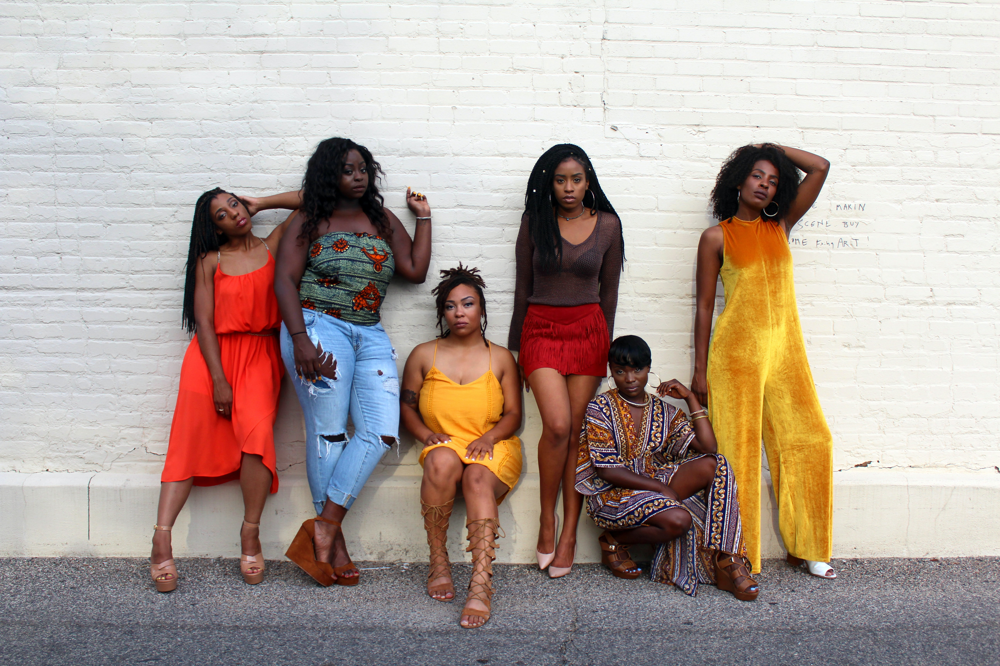
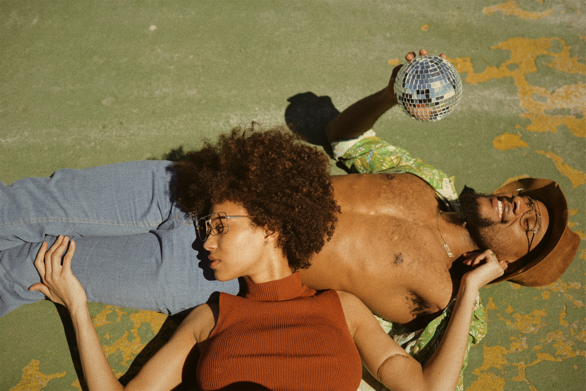
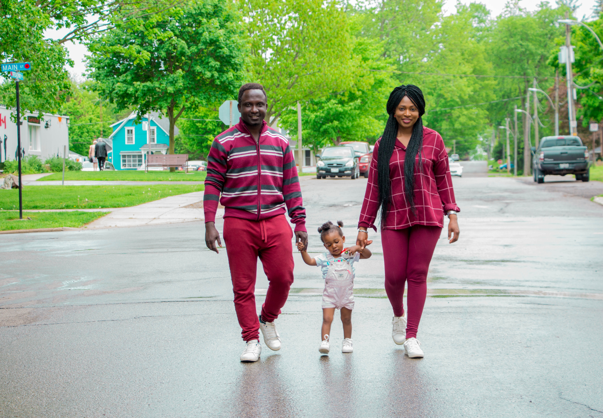

CULTURA, DIVERSÃO E CONFORTO

ENCONTRE SEU ESTILO

PRESENTEIE QUEM VOCÊ AMA

O Corre das Pretas surgiu em 2018, com objetivo de valorizar o trabalho de profissionais pretos e fomentar nossa cultura tão rica e valiosa. Muitas mãos pretas são necessárias para fazer esse projeto acontecer: desde as costureiras dos produtos da loja até os artistas e técnicos que trabalham tanto para esse festival acontecer. O corre das pretas é um projeto para ampliar a nossa voz e mostrar a potência do nosso povo.
Arte, cultura, afeto, gastronomia. Nutrir a nossa alma conhecendo a nossa história, compartilhar experiências e vivenciar a nossa realeza. A arte é parte essencial da nossa história, parte intrínseca de cada pessoa preta.

Como disse Doutora Marimba Ani: “nossa cultura é nosso sistema imunológico”, precisamos nos alimentar dela para nos fortalecer enquanto comunidade. Escutar, aprender e propagar o conhecimento qye sçai passados pelas gerações anteriores, é preservar a nossa ancestralidade e trabalhar na construção de um futuro próspero para nossos mais novos.
Somos um povo que aprendemos através de histórias, da oralidade, e é nosso dever assumir o compromisso de não deixar que essas histórias se percam.